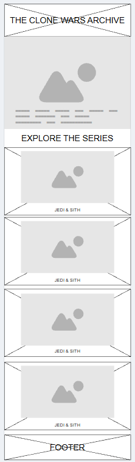
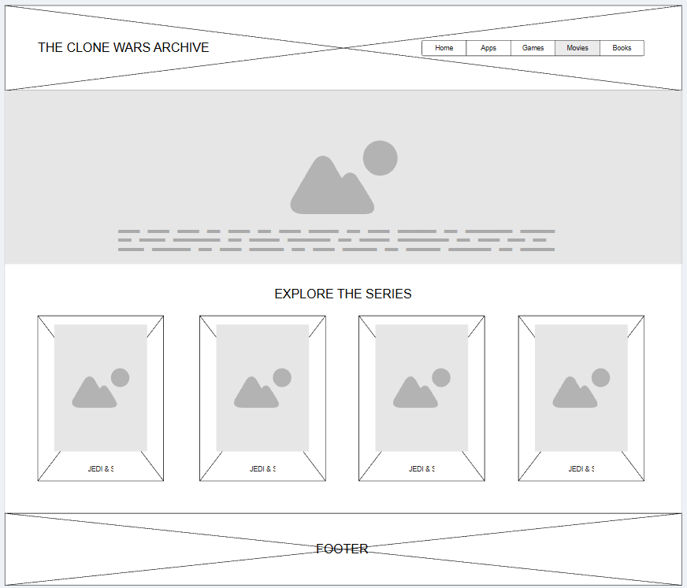

Site Name
The Clone Wars Archive
The name reflects the purpose of the website as an organized archive of information about the Star Wars: The Clone Wars series.
Site Purpose
The Clone Wars Archive is an informational website designed to help new viewers learn about the Star Wars: The Clone Wars animated series. The site introduces the main characters, clone troopers, battle droids, and important battles, giving visitors an organized overview of the series and its major conflicts.
Scenarios
- Who are the main Jedi and Sith characters in The Clone Wars?
- What are the different types of clone troopers and battle droids?
Color Schema
The website will use a black background inspired by the opening of The Clone Wars. Yellow will be used for the site title, headings, and accents, while white will be used for paragraphs and general text.
- Black: #000000 — page background
- Yellow: #FFE81F — headings, titles, and accents
- White: #FFFFFF — paragraphs and general text
Typography
Cinzel will be used for the site title and section headings to give the website a cinematic style inspired by the Star Wars universe. Roboto will be used for paragraphs and general text to provide a clean and readable experience.
- Cinzel — site title and headings
- Roboto — paragraphs and general text
Wireframes
Mobile View

Desktop View
